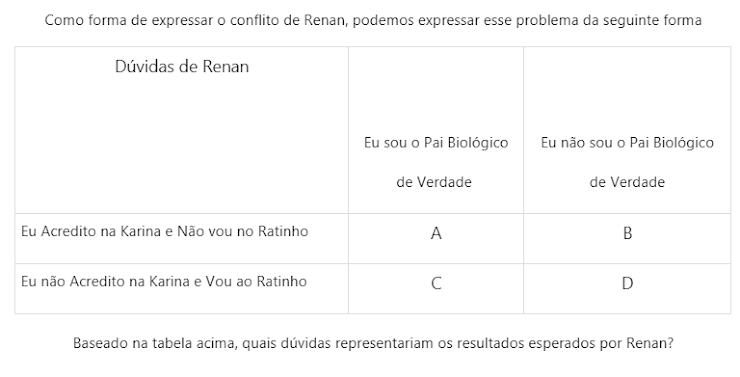

Lista teórica 7
Estatística aplicada à psicobiologia I
Código
dados <- readxl::read_excel("Roca da Serra do Sul.xls") |>
janitor::clean_names()Código
dplyr::glimpse(dados)Rows: 1,500
Columns: 9
$ x1 <chr> "1.000000", "2.000000", "3.000000", "4.000000", "5.000000", "…
$ childs <chr> "1", "0", "0", "0", "0", "2", "2", "2", "2", "0", "0", "0", "…
$ age <dbl> 43, 44, 43, 45, 78, 83, 55, 75, 31, 54, 29, 23, 61, 63, 33, 3…
$ educ <dbl> 11, 16, 16, 15, 17, 11, 12, 12, 18, 18, 18, 15, 12, 4, 10, 14…
$ sex <chr> "Male", "Male", "Female", "Female", "Female", "Male", "Female…
$ race <chr> "white", "black", "white", "white", "white", "white", "white"…
$ life <chr> "Routine", "Exciting", "Exciting", NA, "Exciting", "Routine",…
$ tvhours <dbl> 4, 5, 2, 4, 1, 4, 3, 3, 1, 1, 2, 4, 3, 6, 4, 2, 5, 2, 2, 4, 1…
$ attsprts <chr> "No", "No", "No", "No", "Yes", "No", "Yes", "Yes", "Yes", "Ye…Questões teóricas
Questão 1
1 - O que é tamanho do efeito?
Questão 2
2 - O que é poder observado? E quanto é um nível de poder considerado aceitável?
Questão 3
3 - Marque a alternativa em que todas as medidas são medidas de tamanho do efeito
Questões sobre o teste de DNA
Questão 4
4 - Renan está desconfiado de que o filho de Karina não é seu. Karina diz que o filho é dele e ele está enlouquecendo. Motivado por sua desconfiança, pensa em ir ao Programa do Ratinho fazer o teste de DNA, mas ele está em conflito…

Questão 5
5 - Baseado na tabela da questão anterior, quais seriam os resultados não esperados por Renan?
Questão 6
6 - Baseado em sua Desconfiança, Renan resolve arriscar e entra em contato com o Ratinho para participar do programa e tirar sua dúvida de uma vez por todas! Baseada na tabela anterior isso deixa quais opções para Renan?
Questão 7
7- Veja o desfecho da história no vídeo abaixo! Baseado no vídeo o que podemos concluir? Link: https://www.youtube.com/watch?v=E62ECbixVwA
Questões sobre Roça da Serra do Sul.
Questão 8
8 - Baixe o banco de dados Roça da Serra do Sul. Queremos saber se o que as pessoas acham da vida (life) tem relação com sua idade (Age). Que teste utilizamos nesse caso? Qual é a VD e a VI? Observação: Não se esqueça de verificar os pré-requisitos para o teste. Não vale padronizar os dados.
VD - age
VI - life
Código
dados_8 <- dados |>
select(life, age)Código
dados_8 |>
dplyr::distinct(life)# A tibble: 4 × 1
life
<chr>
1 Routine
2 Exciting
3 <NA>
4 Dull Existem 3 grupos na variável life.
Testando a normalidade: os dados de idade não são normais.
Código
shapiro.test(dados_8$age)
Shapiro-Wilk normality test
data: dados_8$age
W = 0.95501, p-value < 0.00000000000000022Testando a homogeneidade da variância: as variâncias dos grupos não são homogênea.
Código
car::leveneTest(dados_8$age ~ dados_8$life)Levene's Test for Homogeneity of Variance (center = median)
Df F value Pr(>F)
group 2 6.0021 0.002564 **
990
---
Signif. codes: 0 '***' 0.001 '**' 0.01 '*' 0.05 '.' 0.1 ' ' 1Teste t pareado - VD age e VI life
Teste t independente - VD life e VI age
ANOVA - VD age e VI life
ANOVA pareada - VD age e VI life
Friedman - VD age e VI life
Questão 9
9 - Com base no teste escolhido para a questão anterior, o que podemos afirmar?
Código
kruskal.test(age ~ life, data = dados_8)
Kruskal-Wallis rank sum test
data: age by life
Kruskal-Wallis chi-squared = 10.214, df = 2, p-value = 0.006053Existe diferença.
Questão 10
10 - É necessário posthoc? Se sim, qual?
Questão 11
11 - Com base no mesmo banco de dados (Roça da Serra do Sul) teste se existe efeito do que a pessoa acha de sua vida (variável life) sobre o número de filhos. Teste os pré-requisitos, escolha o teste e faça um sumário dos resultados abaixo. Não esqueça de colocar as notações dos testes e também de seguir o formato de descrição dos testes conforme as aulas.